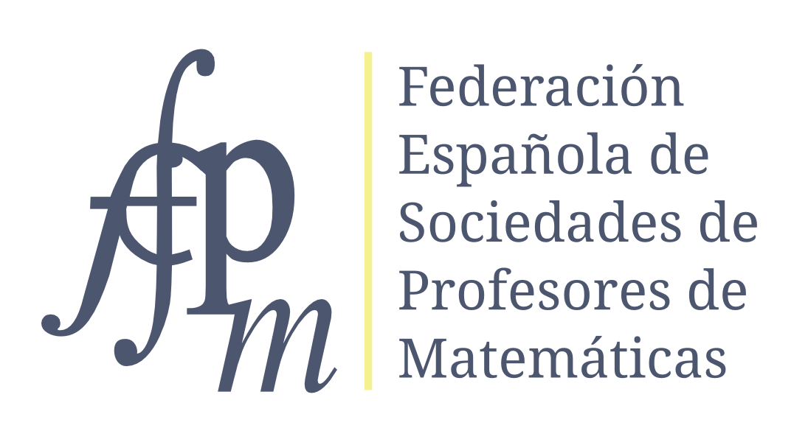
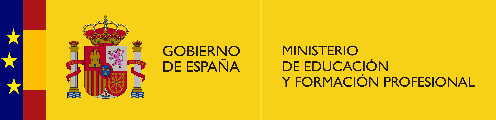

| Proyecto desarrollado por: | En colaboración con: |
|  |  |
Sociedades participantes:
Federació d’Entitats per l’Ensenyament de les Matemàtiques a Catalunya
Sociedad Andaluza de Educación Matemática «Thales»
Sociedad Aragonesa «Pedro Sánchez Ciruelo» de Profesores de Matemáticas
Sociedad Canaria de Profesores de Matemáticas «Isaac Newton»
Asociación Castellana y Leonesa de Educación Matemática «Miguel de Guzmán»
Sociedad Extremeña de Educación Matemática «Ventura Reyes Prósper»
Sociedad Madrileña de Profesores de Matemáticas «Emma Castelnuovo»
Sociedad Matemática de Profesores de Cantabria
Societat d’Educaciò Matemàtica de la Comunitat Valenciana «Al-Khwarizmi»
Sociedad Castellano Manchega de Profesores de Matemáticas (SCMPM)
Sociedad Riojana de Profesores de matemáticas «A Prima»
Asociacion Galega de Profesores de Educación Matemática (AGAPEMA)